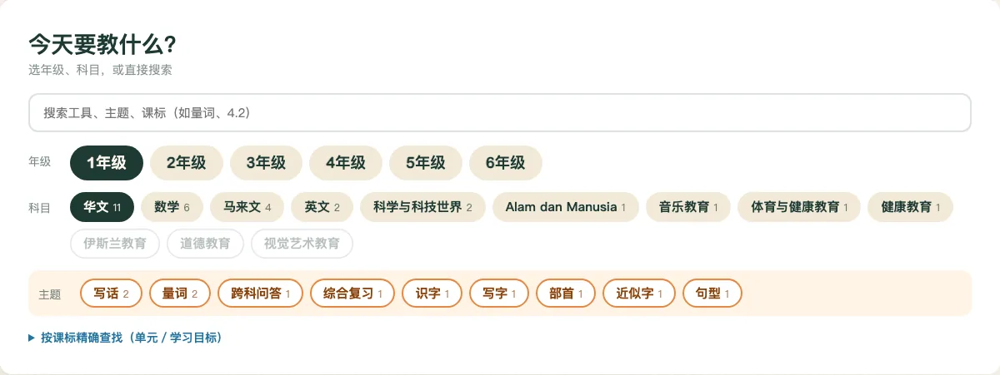
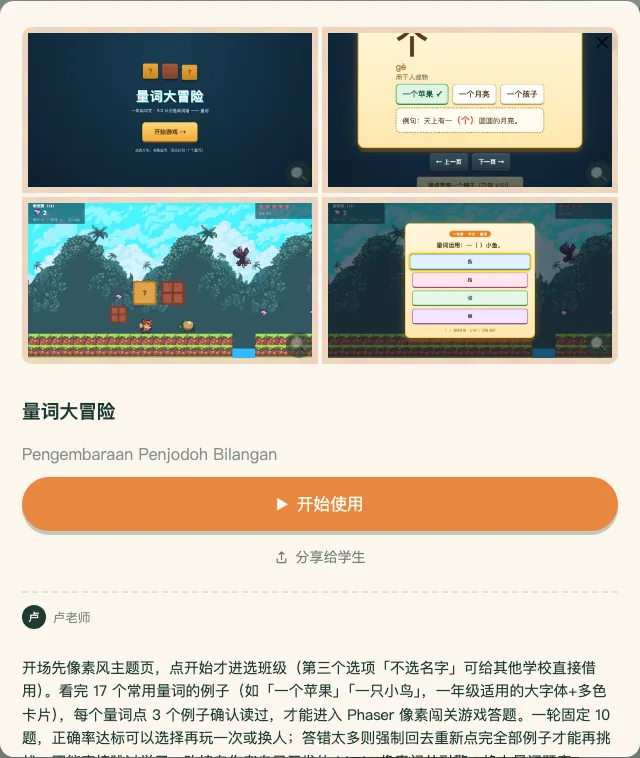
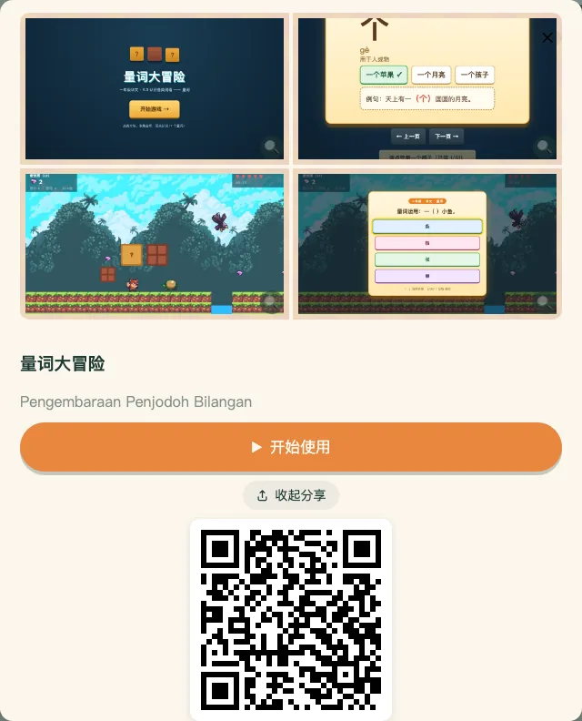
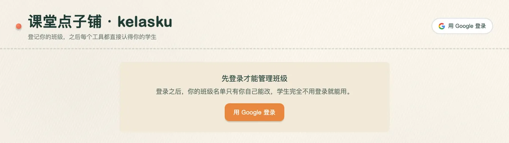
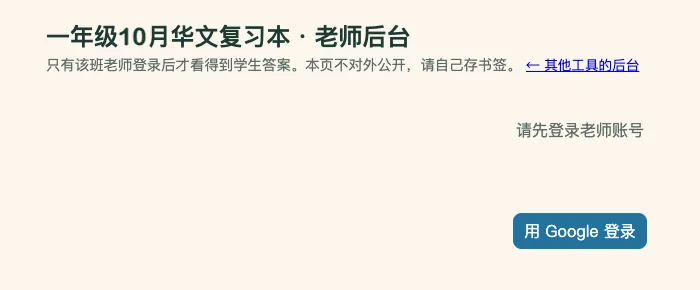

只想找个工具马上上课，看第 1、2 节就够了。要让工具记录学生成绩，再看第 3 节。
1找工具
首页上方的白色面板，由上而下是：搜索框、年级、科目，选了年级和科目之后，会多出一行橙色的主题。下面的卡片会跟着条件一起变少。

- 年级 → 科目 → 主题：先点年级（1 到 6 年级），再点科目，需要的话再点主题缩小范围。卡片上方会写「显示 N 个工具」和目前的条件，点清除条件就回到全部工具。
- 搜索：在搜索框打字，可以搜工具名、主题、课标，例如「量词」「4.2」。
- 按课标精确查找：面板最下面一行，点开后可以按 DSKP 的单元、学习目标来选。选定之后，会列出对应的工具，并写明「可练习什么」和「准备条件」（需要什么设备、要不要班级码等）。
- 卡片上的小标签：橙色是主题，浅蓝色是主要上课方式（全班投影、上台对战、各自练习、回家练习），再来是类型，最后是「N 年级・科目」。卡片上的「新」字，表示最近 7 天内才上架（全站最多标最新的 8 个）。
2用在课堂
点一张卡片，会打开这个工具的详情。第一屏最显眼的是橙色的开始使用：它会在新分页里打开工具，你可以投影给全班，也可以让学生自己点。


- 分享给学生：一个按钮同时做两件事，复制链接，并显示 QR 码。投影 QR 码给学生扫，或把链接贴到班级群都行。再按一次就收起 QR 码。这个链接打开后，是该工具的详情页，学生再按「开始使用」就进去了。QR 码在你的浏览器里生成，网址不会传给第三方网站。
- 复习卷合集：同年级、同科目的复习卷合成一张卡，例如「一年级华文复习卷」。点开后，每一份卷各有自己的「开始使用」「分享给学生」，有后台的卷还有「老师后台」。每一份的分享链接就是那一份工具自己的网址，学生打开直接是那一份，不用再从合集里挑。
- 分隔线以下是给老师看的：作者、课标对照、版本与更新记录、同主题的其他工具，以及「老师后台」链接（有后台的工具才有）。
3记录成绩
有些工具不用班级码，直接打开就能用。想让工具记住「这是哪个班、哪位同学」，并在后台看到成绩，才需要照下面做。学生全程不用登录，要登录的只有老师。
-
建班。到首页页首的我的班级，用 Google 登录。点+ 新增班级：
- 选学校：打学校名字搜索；找不到的话，点「找不到我的学校？」自己加入。
- 填班级缩写：只能用英文字母和数字，不能有空格，例如 1I。
- 加学生：把备忘录里的中文名单整段贴上来，不用先整理；或上传 Excel（会自动找座号、中文名、英文名的栏位，表头不一定在第一行，但至少要有一栏中文姓名或英文姓名）。点「检查名单」，确认无误再按「建立班级」。
- 得到班级码。班级码的格式是「学校代码-班级缩写」，例如 JBC1037-1A。在「我的班级」点进这个班就看得到，旁边有复制按钮。
- 把班级码交给学生。学生打开需要班级码的工具时，会跳出「输入班级代码」的框，输入后就显示这一班的名单。更省事的做法：你自己先在工具里输入班级码（这台电脑已经读到班级的话，点右上角的「换班级」再输入一次），浏览器地址栏的网址就会自动带上 ?code=班级码，复制这个网址发给学生，他们打开就直接看到名单。
- 学生点自己的名字作答。名单里找不到自己的学生，可以手写名字继续做；这样的名字在后台会标成手动输入。
- 在后台看成绩。有后台的工具，在详情页分隔线以下点老师后台，用同一个 Google 账号登录，选班级，就能看到全班的作答，并可以按下载 CSV存成表格。


同事也教这个班？建班时选同一间学校、填同一个班级缩写，系统会告诉你这个班已经有老师建过，按「加入这个班，一起管理」就行，不用重复建。班级画面会写目前有几位老师一起管理。
目前有老师后台的工具是复习卷系列。详情页看得到「老师后台」链接的，才有后台。
后台里的分页会依工具不同而不同（例如总览、题目分析、学生），上方可以选班级、重新载入。网址里的班级码如果不是你管理的班，会改显示你自己的班。
4许愿池
找不到想要的工具，或课堂上有个地方卡住、现有工具又解决不了，就到首页页首的点子许愿池写下来。送出需要用 Google 登录。
- 这堂课：年级、科目、这堂课要学会的具体内容（写出真正要教的字、词或题型，不要只写单元名）。
- 卡在哪里：做什么题或活动时卡住，学生实际怎么答。如果能给一道学生真的做错的题（题目加上学生给的错误答案），最有用，我们会拿它直接设计练习。
- 想要的帮助：最希望得到哪种帮助、上课用得到什么设备，另外有选填的署名与学校。
默认不公开你和你的学校。署名留空，工具上只会写「一位×年级老师」；想用名字才自己填。学校是选填，只用来汇总哪些地方有人需要，不会公开显示。表单里请不要写学生的名字或个人资料。
还没写完就关掉窗口，会问你要不要把内容暂存在这台设备上，下次打开可以接着写。
5常见问题
- 学生要登录吗？
- 不用。浏览、使用工具都不用登录。要登录的只有老师：建班、看后台、送许愿单。
- 手机、平板能用吗？
-
点子铺和工具都是网页，用浏览器打开，不用安装任何东西。点子铺首页有手机版面。
各个工具适合什么设备并不一样，请看它的「准备条件」：在「按课标精确查找」里选到单元，列出的工具会写明，例如一人一台比较好、要不要开声音、要不要班级码。
- 要换班级怎么办？
-
学生那一端：读到班级的工具，画面右上角会有换班级按钮，输入新的班级码，工具会重新载入，上一班的内容不会留着。浏览器会记住上次的班级码，所以共用电脑换班时，要用这个按钮。
老师这一端：同一个账号可以管理好几个班，「我的班级」里都列得出来；在老师后台上方的下拉选单切换班级。
- 名单改错了、删错了学生？
- 在「我的班级」点进班级，每次改动前系统都会自动存档。点查看历史版本，选一个时间点还原到这里。注意：删除这个班级会连学生名单一起删掉，无法恢复。
- 「用过 N 次」是怎么算的？
-
在点子铺按「开始使用」，算一次；老师把工具网址直接转发、学生打开，也算一次（这一条自 2026-10-08 起计入）。同一台浏览器、同一个工具，30 分钟内只算一次，刷新不会增加。自动化测试用的浏览器不计入。
这是在浏览器端估算的次数，不是不重复的学生人数；课室里多台电脑同时开，会各算一次。
回首页找工具
用了觉得哪里不顺，欢迎在 Telegram 私讯我。